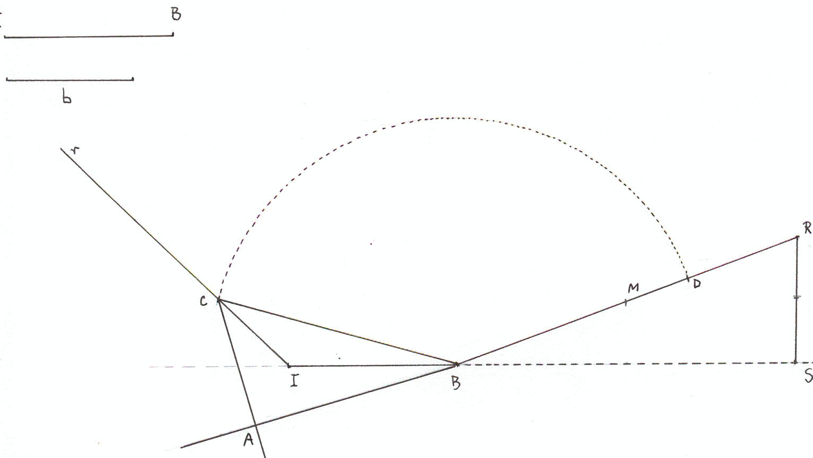

Problema 94 (Construir un triángulo rectángulo ABC ( siendo A = 90º), dados AC y BI (I, incentro)
Solución de María Ascensión López Chamorro, Catedrático de Matemáticas del I.E.S. (Leopoldo Cano) de Valladolid.
Supongamos el problema resuelto y sea T el punto de tangencia del círculo inscrito con el cateto AB. Llamemos d = BI. Se verifica
AT = p - a = (b + c -a)/2 , TB = p - b = (a + c -b)/2 ,
siendo p el semiperímetro del triángulo. Además, como los ángulos
< B y < C son complementarios, el ángulo < BIC es de 135º.
En el triángulo rectángulo BIT se tiene entonces
d2 =( (b + c - a)2 + (a + c - b)2)/4 = a2 - ab,
y de aquí que
(La elección del signo + se justifica porque a es la hipotenusa)
Todos los números que aparecen en el segundo miembro son construibles con regla y compás.
1ª construcción.
Como IB es una bisectriz, el vértice C está situado en la semirrecta r que forma con IB un ángulo de 135º. Sobre la prolongación de IB (más allá de B), tomamos un segmento de longitud 2d, de extremo S. Levantamos la perpendicular a IB, SR, con SR = b.

Entonces la hipotenusa BR tiene una longitud .
Sea M el punto medio de BR. Sea D el punto del segmento MR tal
que MD = b/2.
La circunferencia de centro B y radio BD corta a la semirrecta r en el punto C.
La recta BA es simétrica de BC con respecto a BI y CA es simétrica de CB con respecto a CI. Su intersección con BA determina el punto A.
Valladolid, 17 de mayo de 2003.